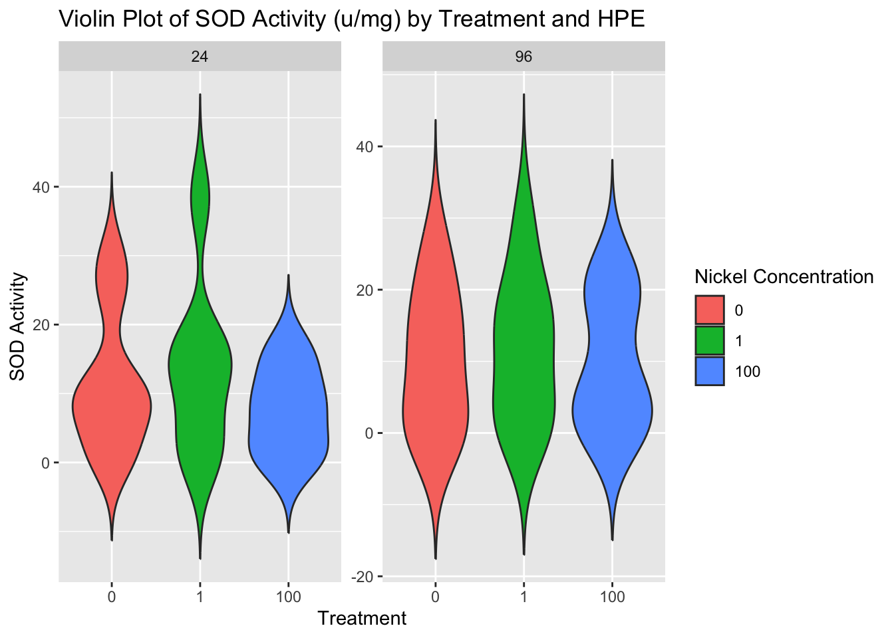

library(knitr)
library(tidyverse)
library(tidyr)
library(dplyr)
library(hrbrthemes)
library(ggplot2)
library(car)
library(RColorBrewer)
library(ggpubr)
knitr::opts_chunk$set(echo = TRUE,
eval = TRUE)Background
An LC50 determination for nickel on Botryllus schlosseri was completed in Spring Quarter 2024. Specimens were snap frozen at the 24 and 96 hour mark to assess for accumulation of Superoxide Dismutase 1 (SOD1). SOD1 is an endogenous antioxidant with a primary function involving the removal of reactive oxygen species (ROS).
Nickel genotoxicity functions indirectly through the resultant intracellular accumulation of ROS in most animal cells. ROS cause double and single stranded breaks to the DNA which inevitably may result in mutations forming at the cellular attempts to repair the DNA.
Here we explore the effects of increasing concentrations of nickel on the accumulation of SOD1 in B. schlosseri.
Retrieving Data from Google Sheets
SOD Data
Make sure you have made your Google sheet publicly available to anyone that has the link. If you make any updates to the sheet just re-curl the data, meaning just re-run the code below.
I apologize for not making a relative path. Just modify what is after “tee” to your own directory path.
curl -L https://docs.google.com/spreadsheets/d/1vNxX2tBdEa0Ibyd4mFdru5sAZx0aipv37-y-hkqvJq4/export?exportFormat=csv | tee /Users/valeste/Documents/Git/tough-tunicates/posts/LC50-SOD/SOD.csvBCA Data
curl -L https://docs.google.com/spreadsheets/d/1mKhd95gn_tith8fJbYjX3jGyrO-Y4mWKCoCKdTVZFHY/export?exportFormat=csv | tee /Users/valeste/Documents/Git/tough-tunicates/posts/LC50-SOD/BCA.csvRead in the data to your global environment
sod <- read.csv("SOD.csv")
#let's take a peak
head(sod) well_content tech_rep hom_num date_assay treatment hpe sod_calc
1 Hom 1 1:3 R1 R1 1 7/2/24 0 24 2.305306
2 Hom 1 1:3 R2 R2 1 7/2/24 0 24 2.179302
3 Hom 2 1:3 R1 R1 2 7/2/24 0 24 4.959112
4 Hom 2 1:3 R2 R2 2 7/2/24 0 24 3.800808
5 Hom 3 1:3 R1 R1 3 7/2/24 0 24 3.495769
6 Hom 3 1:3 R2 R2 3 7/2/24 0 24 1.962912bca <- read.csv("BCA.csv")
#another little peak
head(bca) protein_conc.mg.mL well_content hom_num tech_rep well plate assay_date
1 0.2905277 Hom 1 1:4 R1 1 R1 A1 2 7/4/24
2 0.2385391 Hom 1 1:4 R2 1 R2 B1 2 7/4/24
3 0.2388732 Hom 1 1:4 R3 1 R3 C1 2 7/4/24
4 0.3881566 Hom 2 1:4 R1 2 R1 A2 2 7/4/24
5 0.3379439 Hom 2 1:4 R2 2 R2 B2 2 7/4/24
6 0.3473041 Hom 2 1:4 R3 2 R3 C2 2 7/4/24
treatment
1 0
2 0
3 0
4 0
5 0
6 0In the BCA data frame, we are missing the hpe associated with the each sample. We can add this on to a new data frame that also combines it with the SOD data after we take the averages and standard errors of the technical replicates of the BCA assay.
Note
Note that as of July 3, 2024, the data set for the 10 mg/L is incomplete in this data frame and should be taken with a grain of salt or removed from the data frame below. The 0 mg/L treatment is also incomplete with homogenate 37 needing to be re-evaluated.
Data Munging!
Filter Data
Clean up SOD data
df_clean_sod <- sod %>%
filter(!is.na(sod_calc)) %>% # remove any rows with NA
filter(treatment != 10) # remove the 10 mg/L treatment since the reps have not all been processed yetClean up BCA data
df_clean_bca <- bca %>%
filter(!is.na(protein_conc.mg.mL)) %>% # remove any rows with NA
filter(treatment != 10) # remove the 10 mg/L treatment since the reps have not all been processed yetAverage assays’ technical replicates
Get the mean and standard error of the technical replicates for SOD:
df_avg_sod <- df_clean_sod %>%
group_by(hom_num, treatment, hpe) %>%
summarize(
sod_avg = mean(sod_calc, na.rm = TRUE),
sod_se = sd(sod_calc, na.rm = TRUE) / sqrt(n())
)`summarise()` has grouped output by 'hom_num', 'treatment'. You can override
using the `.groups` argument.df_avg_bca <- df_clean_bca %>%
group_by(hom_num, treatment) %>%
summarize(
bca_avg = mean(protein_conc.mg.mL, na.rm = TRUE),
bca_se = sd(protein_conc.mg.mL, na.rm = TRUE) / sqrt(n())
)`summarise()` has grouped output by 'hom_num'. You can override using the
`.groups` argument.combo <- inner_join(df_avg_sod, df_avg_bca, by = c("hom_num", "treatment"))
head(combo)# A tibble: 6 × 7
# Groups: hom_num, treatment [6]
hom_num treatment hpe sod_avg sod_se bca_avg bca_se
<int> <int> <int> <dbl> <dbl> <dbl> <dbl>
1 1 0 24 2.24 0.0630 0.256 0.0173
2 2 0 24 4.38 0.579 0.358 0.0154
3 3 0 24 2.73 0.766 0.357 0.00688
4 7 1 24 8.36 0.513 0.542 0.0430
5 8 1 24 0.487 0.100 0.483 0.0125
6 9 1 24 2.81 1.05 0.345 0.0184
Note
The column sod_avg is in activity units/mL and the column bca_avg is in mg/mL.
combo <- combo %>%
mutate(sod_u_mg = sod_avg / bca_avg)Exploratory Plots
Note that the plot below is the unormalized data. A BCA was run on the samples as well to quantify total protein content.
ggplot(combo, aes(x = factor(treatment), y = sod_avg, fill = factor(treatment))) +
geom_violin(trim = FALSE) +
facet_wrap(~ hpe, scales = "free_y") +
labs(title = "Violin Plot of SOD Activity (u/mL) by Treatment and HPE",
fill = "Nickel Concentration",
x = "Treatment",
y = "SOD Activity") 
SOD1 activity normalized to the protein content per sample:
ggplot(combo, aes(x = factor(treatment), y = sod_u_mg, fill = factor(treatment))) +
geom_violin(trim = FALSE) +
facet_wrap(~ hpe, scales = "free_y") +
labs(title = "Violin Plot of SOD Activity (u/mg) by Treatment and HPE",
fill = "Nickel Concentration",
x = "Treatment",
y = "SOD Activity") 
Statistical Analysis
We will run a two-way ANOVA on the data exploring sod1 activity units/mg of protein by hours post exposure and nickel concentration.
# Perform ANOVA
anova_result <- aov(sod_u_mg ~ hpe * treatment, data = combo)
# Summarize ANOVA results
summary(anova_result) Df Sum Sq Mean Sq F value Pr(>F)
hpe 1 2 1.58 0.017 0.897
treatment 1 96 95.96 1.037 0.315
hpe:treatment 1 42 42.47 0.459 0.502
Residuals 41 3795 92.56 ANOVA Conclusions
SOD1 activity does not differ across nickel concentration treatment groups or even the control at either the 24 or 96 hours post exposure mark.
Next Steps?
There could be various reasons why we did not observe the expected effect of increased SOD activity with increasing concentrations of nickel.
Power Analysis
Currently this will only work below if the groups are of equal sample size. Because I have yet to re-process the homogenate 37 (the final replicate for the control) this analysis cannot work.
library(pwr)
anova_result <- aov(sod_u_mg ~ hpe * treatment, data = combo)
summary_result <- summary(anova_result)
# Extract the sum of squares
ss_total <- sum(summary_result[[1]][, "Sum Sq"])
ss_residual <- summary_result[[1]]["Residuals", "Sum Sq"]
# Calculate eta squared
eta_squared <- 1 - (ss_residual / ss_total)
# Calculate effect size f
effect_size_f <- sqrt(eta_squared / (1 - eta_squared))# Number of groups in your ANOVA (e.g., hpe * treatment)
num_groups <- length(unique(combo$hpe)) * length(unique(combo$treatment))
# Significance level (commonly set to 0.05)
alpha <- 0.05
# Sample size (total number of observations)
sample_size <- nrow(combo)
# Conduct power analysis
power_analysis <- pwr.anova.test(k = num_groups, f = effect_size_f, sig.level = alpha, n = sample_size / num_groups)
# Print the result
print(power_analysis)
Balanced one-way analysis of variance power calculation
k = 6
n = 7.5
f = 0.1920704
sig.level = 0.05
power = 0.1238005
NOTE: n is number in each groupNote that n = 7.5 is in relation to the unequal sample sizes per group which is in relation to the missing control sample, homogenate 37.
Power (0.1238005): The power of 0.1238 indicates that this study has a low probability (approximately 12.38%) of detecting the true effect (f = 0.1920704) under the current conditions (sample sizes, effect size, and significance level).
Considerations: To increase power, we may need to consider increasing the sample size per group, using more sensitive measures, or adjusting your study design to reduce variability.